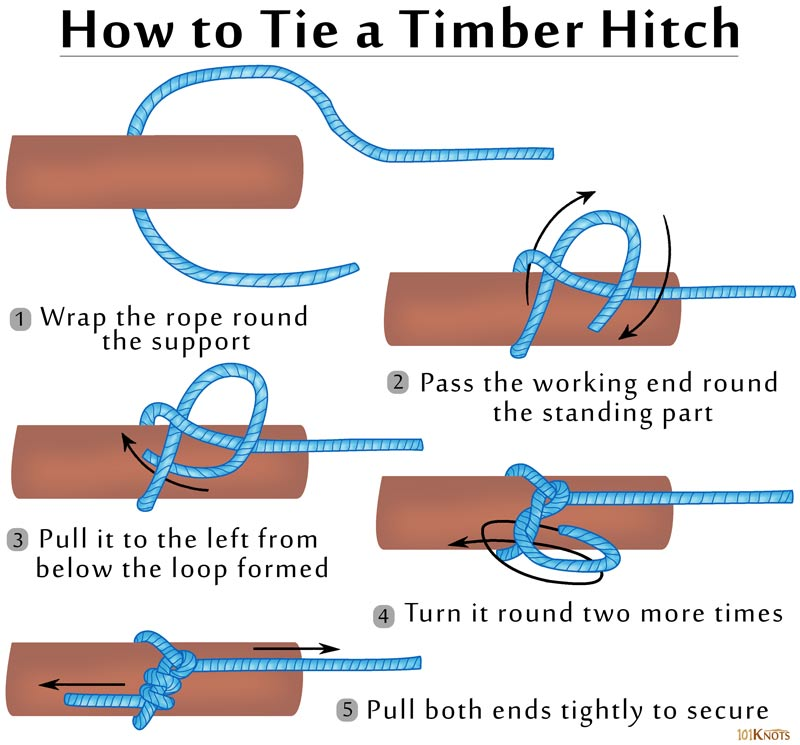

Timber Hitch
The timber hitch secures a rope to an object for hauling or to act as a support.
How to tie a timber hitch:
To create a timber hitch, all you need to do is run the free end of the rope around the object, like a log, that you intend to pull. Then wrap the tag end of the rope around the inside of the loop you created four or five times. After you tighten the timber hitch so the four or five wraps are tight against the object, the constant tension will keep the hitch seated.
